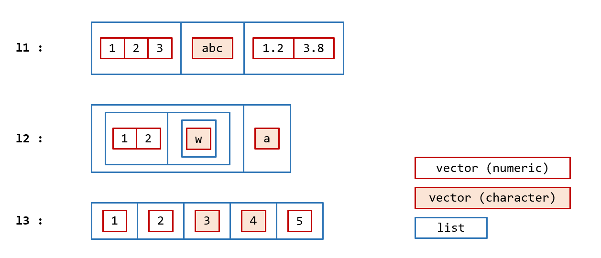

10 Heterogeneous Types
10.1 Lists
list, as.list, is.list, unlist
- Atomic vectors are collections of values of the same type.
- Lists are collections of vectors and lists. The vectors within this collection may be of any type, and of any length.
- Lists are recursive, meaning a list can be an element of a list.

10.2 Creation
To create a list, we use the list function:
A list can be an element of a list:
The c function (implicitly) coerce vectors to lists of vectors before combining them into a list

Explicit coercion from other structures to lists is done via as.list.
A list can be flatten-ed with unlist
10.3 names attributes
Like in vectors, you can add attributes such as names to lists
One common usage of named lists is to return multiple values from a function:
# recall p1.3:
Bmi <- function(weight, height) {
return(weight / height^2)
}
# now we want to know the value of bmi as well as if the bmi is showing a need to reduce weight:
Bmi2 <- function(weight, height) {
bmi_value <- weight / height^2
return(list(
value = bmi_value,
reduce_weight = bmi_value >= 25
))
}
bb <- Bmi2(weight = 90, height = 1.75)
bb[["value"]]
bb[["reduce_weight"]]10.4 class attribute
The class attribute of a list determines how the list is printed, and which methods are used when we apply generic functions to the list. We will talk about generic functions and methods in [Object-oriented programming]. Examples of classes of lists include data.frame, tibble, lm, and glm:
10.5 data.frame and tibble
data.frame and tibble are two classes of the list data structure used in R:
data.frame- Data frames are tightly coupled collections of variables. Data frame is a fundamental data structure used by most of R’s modelling functions.tibble- The data frames oftidyverse
10.5.1 data.frame
A data frame is a named list of vectors with attributes names, row.names, and class of “data.frame”. In contrast to regular lists, all vectors inside the collection of a data frame are required to have the same length. Thus a data frame is always rectangular shaped.
Because data frame shares the same shape with matrix, the same functions applicable to matrix also work on data frame: nrow, ncol, rownames, colnames, rbind, cbind, t
Noticed the column names are also duplicated? (See [Duplicated names])
To prove data frames are just lists with fancy attributes, we manually construct a data.frame object by adding attributes to a list:
Explicit coercion: as.data.frame
10.5.2 tibble
tibble is tidyverse’s version of data frame